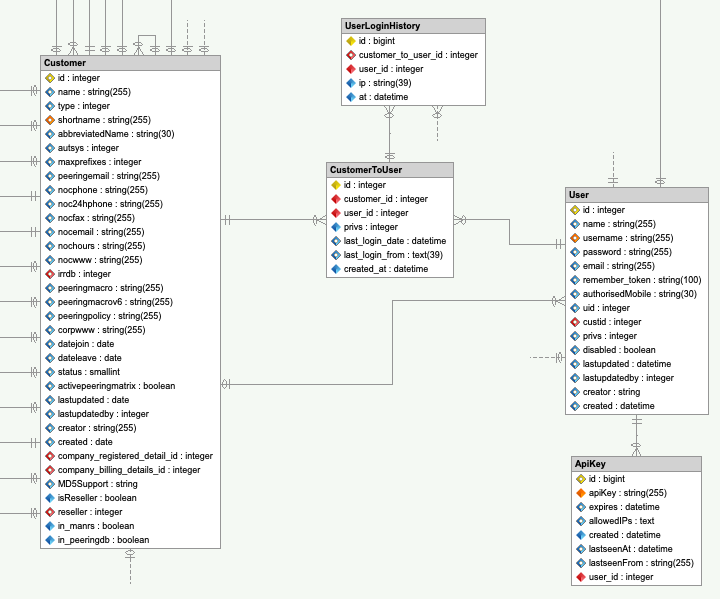

Development Notes for User Management
The project management of this m:n (customer:user) enhancement is an internal Island Bridge Networks issue and this page serves to expose that and more information publicly.
Read the official user documentation first as that will answer questions around how it is meant to work.
Here is the schema for customers / users around the time of the v5 release:

One for the goals of this enhancement was to try to not break as much existing functionality as possible. As an example, we would typically get the user's customer relation using $user->getCustomer() and this was linked via the user.custid column.
In developing this enhancement, we needed to track two things:
- the customer the user was currently logged in for;
- the customer the user was last logged in for so on the next login, we could return to that customer by default.
By using the user.custid for this purpose, we retained the ability to call $user->getCustomer() which meant the vast majority of existing code continued to work as expected.
So, the mechanism for switching a user from one customer to another is:
- authorization: does a c2u (customer to user) record exist for the user/customer combination;
- update
user.custidto the target customer ID; - issue a redirect to the home page as the new customer.
When logging in, the system will:
- log you is as the last customer you acted for so long as that c2u link still exists; or
- pick any customer where the c2u link does not exist / no previous customer set; or
- errors if no c2u entries exist.